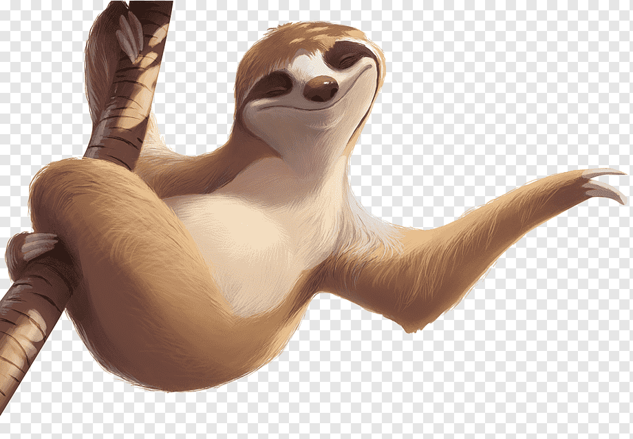

| No. |
Nombre |
Tipo |
Imagen |
Descripción |
| 1 |
Jaguar |
Animal |
|
El jaguar es el mayor felino de América y es vital para el ecosistema, controlando las poblaciones de otras especies. |
| 2 |
Oso Andino |
Animal |
 |
El oso andino es el único oso nativo de Sudamérica. Su principal amenaza es la pérdida de hábitat. |
| 3 |
Tapir |
Animal |
|
El tapir es un herbívoro de gran tamaño que juega un papel crucial en la dispersión de semillas. |
| 4 |
Nutria Gigante |
Animal |
 |
La nutria gigante es un mamífero acuático que se encuentra en ríos y lagos. |
| 5 |
Manatí |
Animal |
 |
El manatí es un mamífero acuático herbívoro que habita en ríos y estuarios. |
| 6 |
Guacamayo Rojo |
Animal |
 |
El guacamayo rojo es conocido por su plumaje vibrante. |
| 7 |
Ballena Franca |
Animal |
 |
La ballena franca es una especie de ballena que se encuentra en aguas costeras. |
| 8 |
Perezoso |
Animal |
 |
El perezoso es un mamífero arbóreo que se mueve lentamente. |
| 9 |
Rana de cristal |
Animal |
 |
La rana de cristal es conocida por su piel transparente. |
| 10 |
Mono Titi |
Animal |
 |
El mono titi es un primate pequeño y sociable. |
| 11 |
Rana de lluvia |
Animal |
 |
La rana de lluvia es una especie que habita en zonas húmedas. |
| 12 |
Águila Arpia |
Animal |
 |
El águila arpia es una de las aves rapaces más grandes del mundo. |
| 13 |
Mariposa Morfo |
Animal |
 |
La mariposa morfo es conocida por su vibrante color azul. |
| 14 |
Rana de flecha |
Animal |
 |
La rana de flecha es famosa por sus venenosas secreciones. |
| 15 |
Puma |
Animal |
|
El puma es un gran felino que habita en diversas regiones. |
| 16 |
Serpiente de Cascabel |
Animal |
 |
La serpiente de cascabel es conocida por su veneno y su característico sonido. |
| 17 |
Perro de Agua |
Animal |
 |
El perro de agua es un mamífero acuático que se encuentra en ríos y lagos. |
| 18 |
Tortuga de río |
Animal |
 |
La tortuga de río es una especie en peligro debido a la pérdida de hábitat. |
| 19 |
Vicuña |
Animal |
|
La vicuña es un animal de los Andes conocido por su lana suave. |
| 20 |
Colibrí |
Animal |
|
El colibrí es un pequeño ave que se alimenta de néctar. |